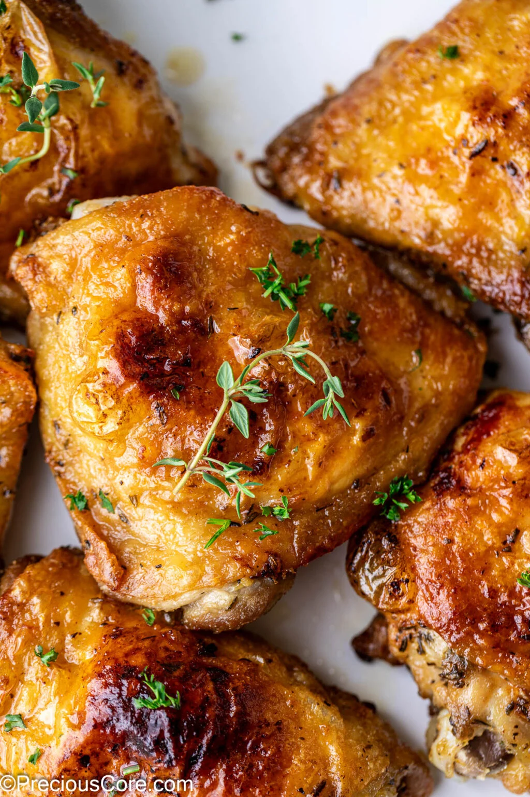

MayoChicken

Description
Succulent, juicy, garlicky, herby chicken marinated with an insanely good mayonnaise marinade. You will want to put this Mayonnaise Chicken on your list of delicious recipes.This is a bold statement but it is one of the best foods you will ever make! With only 10 minutes of prep time, you’ll have really tasty chicken. Let the chicken marinate if you can and it will be tasty to the bone!
Ingredients:
- Chicken
- Mayonnaise
- Chicken Bouillon Powder
- Garlic Powder and Onion Powder
- ½Dried Herbs
Steps
- Rinse chicken, then pat dry with paper towels
- In a small bowl, combine mayonnaise and seasonings to make marinade
- Rub the mayonnaise mixture all over the chicken to get to every nook and cranny of the chicken.
- Cover and let it marinate in the fridge for 8 hours or for 2 hours in the fridge
- Place the chicken on a greased baking sheet and grill on broil until done, flipping once as needed.